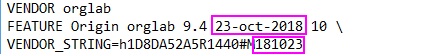

FAQ-905 Bin ich berechtigt für das Upgrade auf die neue Version?
Eligible-for-Origin-upgrade
Letztes Update: 30.01.2023
 |
Im Fall des Releases einer neuen Version sollten Kunden eine Nachricht erhalten, wenn Hilfe: Hilfedateien erhalten/Nach Updates suchen ausgewählt ist.
|
Rechnergebundene Einzelnutzer-/Gruppenlizenzen
- Falls Sie Origin zeitlich unbegrenzt haben - unabhängig von der Version, die Sie gelauft haben - überprüfen Sie bitte, ob das Ablaufdatum Ihrer Softwarepflege nach dem Releasedatum der neuen Version liegt. Falls ja, sind Sie berechtigt, die neue Version auf dem gleichen PC kostenfrei zu installieren.
- Wenn Sie ein zeitlich begrenztes Origin gekauft haben, überprüfen Sie bitte das Ablaufdatum von Ihrer Software. Solange die Lizenz nicht abgelaufen ist (Hilfe: Über Origin), können Sie die neue Version auf dem gleichen PC installieren und sie weiterhin benutzen.
Hinweis: Sie können die Lizenzierungs- und Softwarepflegeinformationen über Hilfe: Über Origin im aktuellen Origin überprüfen. Wenn Sie denken, dass in Hilfe: Über Origin die falschen Daten gezeigt werden, könnte das daran liegen, dass Sie die Lizenz nicht erneut aktiviert haben, nachdem Sie Ihre Softwarepflege erneuerten.
|
Bitte lesen Sie auf dieser Seite eine Anleitung für das automatische Upgrade von Origin auf die neue Version.
|
Concurrent-Netzwerklizenzen
- Falls Sie Origin zeitlich unbegrenzt haben - unabhängig von der Version, die Sie gelauft haben - überprüfen Sie bitte, ob das Ablaufdatum Ihrer Softwarepflege nach dem Releasedatum der neuen Version liegt. Falls ja, sind Sie berechtigt, die neue Version auf dem gleichen PC kostenfrei zu installieren.
- Wenn Sie ein zeitlich begrenztes Origin gekauft haben, überprüfen Sie bitte das Ablaufdatum von Ihrer Software. Solange die Lizenz nicht abgelaufen ist (Hilfe: Über Origin), können Sie die neue Version auf dem gleichen PC installieren und sie weiterhin benutzen.
Hinweis: Sie können die Lizenzierungs- und Softwarepflegeinformationen über Hilfe: Über Origin im aktuellen Origin überprüfen. Wenn Sie denken, dass in Hilfe: Über Origin die falschen Daten gezeigt werden, könnte das daran liegen, dass der Admin der Lizenz keine neue Lizenz für den FLEXnet Server abgerufen hat, nachdem Ihre Softwarepflege erneuert wurde.
Concurrent-Netzwerkadministratoren: Wie Sie das Ablaufdatum Ihrer Softwarepflege prüfen
Navigieren Sie zu Ihrer Lizenzdatei und öffnen Sie sie in einem Texteditor.
- Zeitlich unbegrenzte Lizenzen: Beachten Sie, dass die Origin-Version, die in der Zeile FEATURE aufgeführt wird, möglicherweise nicht die neueste verfügbare Version ist. Wichtig ist das Ablaufdatum, dass als Suffix hinter VENDOR_STRING (e.g. VENDOR_STRING=h0316F62A5R7200#MYYMMDD angegeben ist, wobei YY=zweistelliges Jahr, MM=Monat und DD=Tag).
-

- Ablaufende Lizenzen: Das Ablaufdatum der Origin-Lizenz, das in der Zeile FEATURE aufgeführt ist, entspricht dem Datum, das als Suffix hinter VENDOR_STRING (e.g. VENDOR_STRING=h1D8DA52A5R1440#MyyMMdd angegeben ist, wobei YY=zweistelliges Jahr, MM=Monat und DD=Tag).
-
- 
Beispiel: Sie kauften Origin 2017 im Mai 2017. Dieser Kauf beinhaltete eine einjährige Softwarepflege. Origin 2018 wurde am 9. November 2017 herausgegeben. Da das Ablaufdatum Ihrer Softwarepflege im Mai 2018 liegt, SIND Sie auf ein Upgrade auf 2018 berechtigt.
Studentenlizenzen
Solange die Lizenz nicht abgelaufen ist, können Sie die neue Version auf dem gleichen PC installieren und sie weiterhin benutzen.
Schlüsselwörter:Upgrade, Update, Berechtigung, parallele Installation, Lizenz, erneuern, Softwarepflege